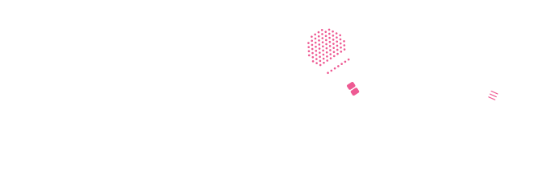
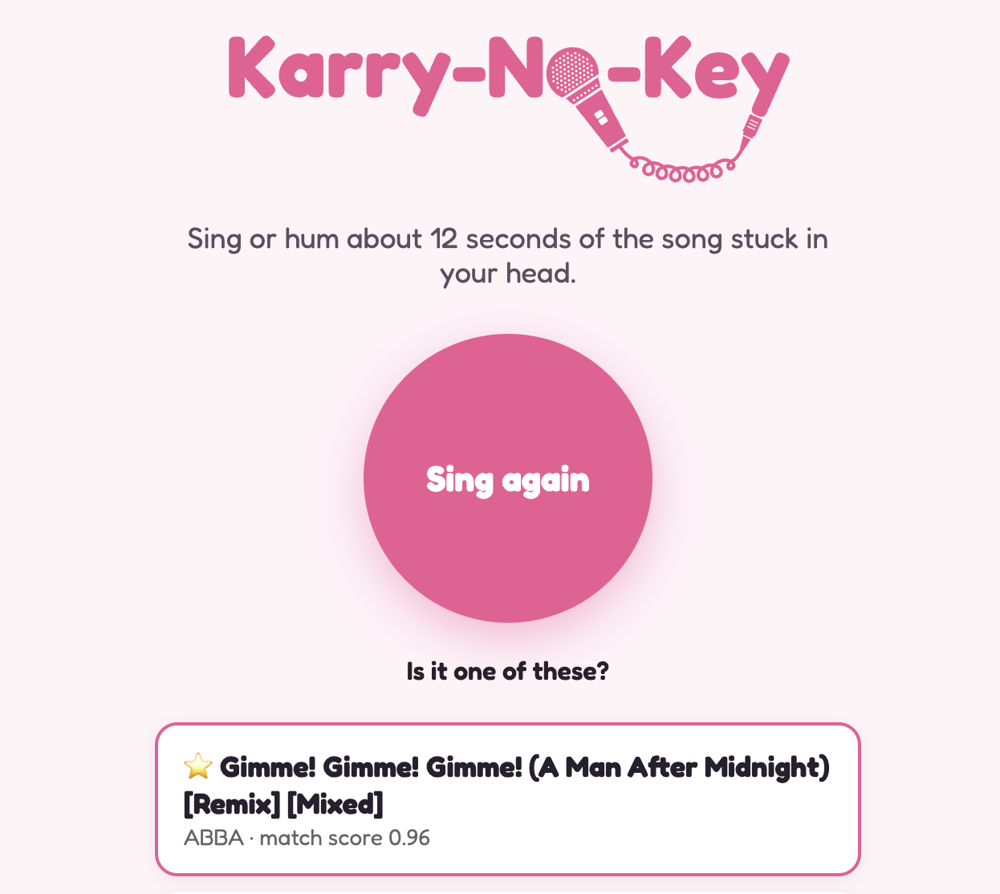
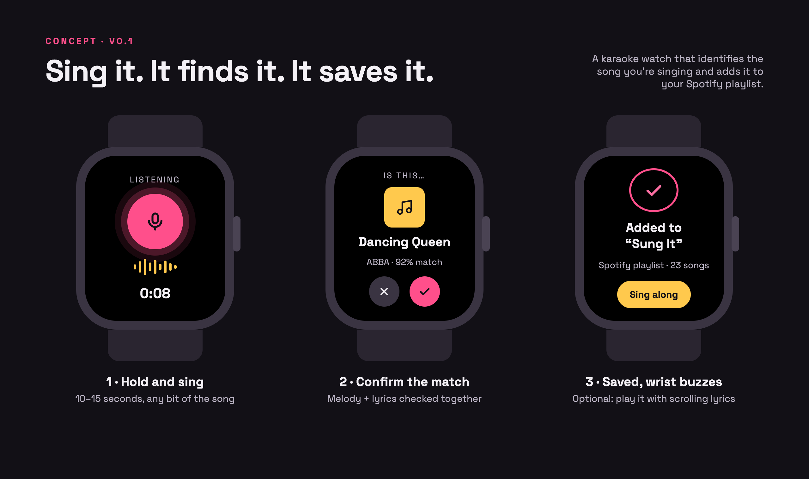
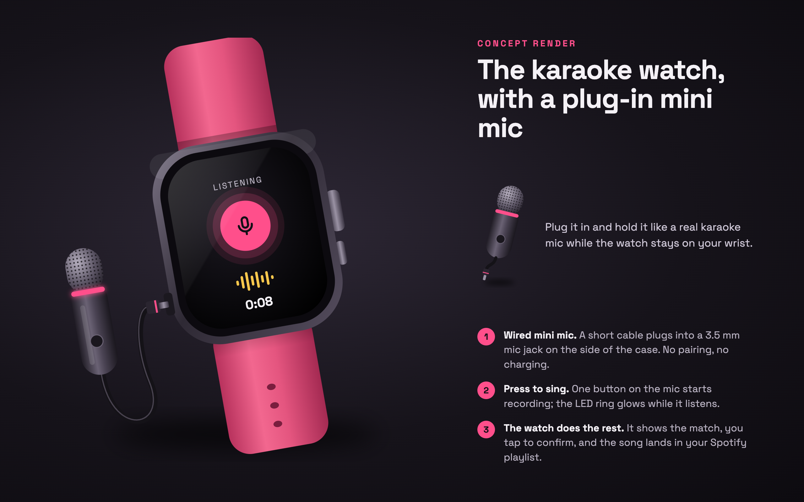
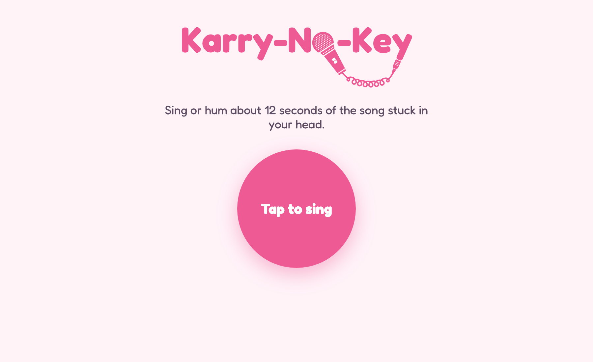

When you've got a song stuck in your head that you just can't help but hum outloud all day. All you need is to Karry-No-Key and be free! Sing into your wearable karaoke device, it recognizes the song instantly and lets you add to a Spotify playlist, all with a simple push of a button!
Current Status: Build 2: laptop version
Demo: The laptop app running locally, plus the happy path screen flow and product render

Build 2 laptop app working end to end: I sang into my laptop mic, the server sent the clip to ACRCloud, and it came back with the right song as its top match (ABBA, match score 0.96). It picked a remix rather than the original, so the app now puts original versions first.


Who is this for? Anyone who has a song stuck in their head and loves to sing it out loud on the go! For user testing, I'm starting with NYU students: people who'll enjoy the novelty of the device, aren't afraid to sing out loud, and would use it in their social lives and while studying.
The painful "Before" workflow: "What's that song?!" apps like Shazam work by matching recorded music, so they can't identify a song you hum or sing. Google's hum-to-search and SoundHound can, but they're phone searches: you stop, open an app and hum into your phone. Nothing turns singing for fun into a way to find and save songs, and karaoke machines and mini mics are bulky and don't identify or save anything.
The "After" workflow with this product: You sing a bit of the song stuck in your head into Karry-No-Key. It recognises the song and, with one tap, saves it to your Spotify playlist. Singing for fun becomes the way you find and keep songs.
Riskiest Assumption: That ACRCloud can correctly identify a song from 10–15 seconds of amateur singing recorded on a laptop or watch mic. If it can't get the right song in its top 3 guesses most of the time, the product doesn't work.
Evidence so far: 2 out of 2 correct. I sang Gimme! Gimme! Gimme! (ABBA) and Man I Need (Olivia Dean), and both came back as the top guess with a match score of 0.96. Two catches: both times it returned a remix rather than the original (the app now puts originals first), and one quiet recording failed completely (the app now asks you to sing louder). Two songs, both sung by me, isn't proof yet.
How I'll test it this week: record 5 NYU students each singing a different song into the laptop app, and count how often the right song is in the top 3. PostHog tracks every attempt, so the result comes from real data, not my memory.
Who I'll record and how I'll reach them:
Other risks: Spotify has tightened developer access (Premium needed, and only 5 test users can connect), and my ACRCloud free trial runs out in about 2 weeks.
Simple Architecture (now, laptop version): User sings into the laptop mic → web page sends the clip to the Karry-No-Key server on my laptop → ACRCloud matches the melody → page shows the top 3 matches with a link to each in Spotify
Simple Architecture (next, watch version): User sings into the watch's built-in mics → watch sends the clip over Wi-Fi to the Karry-No-Key server → ACRCloud matches the melody → watch shows the top match with a confirm button → server adds the song to the user's Spotify playlist

tapped_sing, song_matched (with the top song and its score), no_match, too_quiet and clicked_spotify. Together these show how often people sing, how often it finds a song, and how often they go on to Spotify..env file, which Git ignores, so they never reach GitHub.